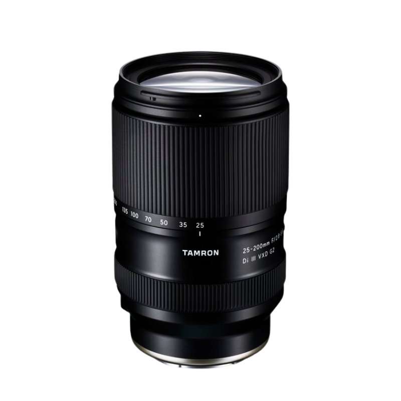
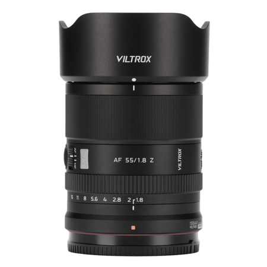
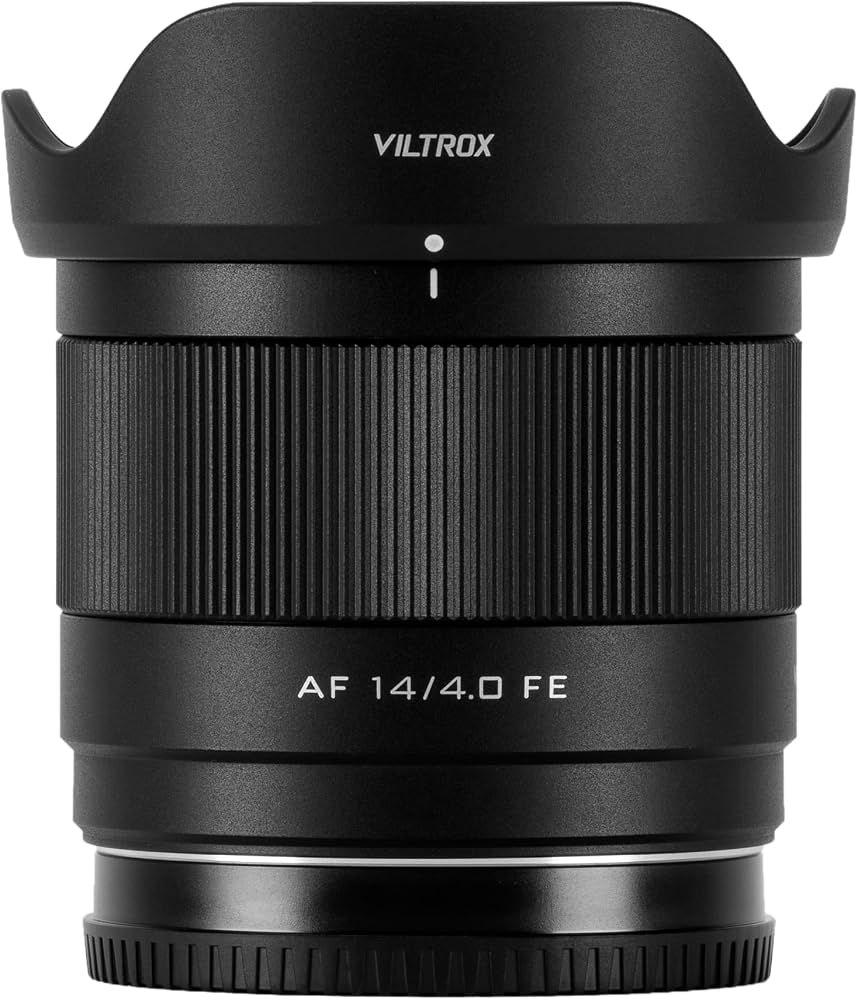
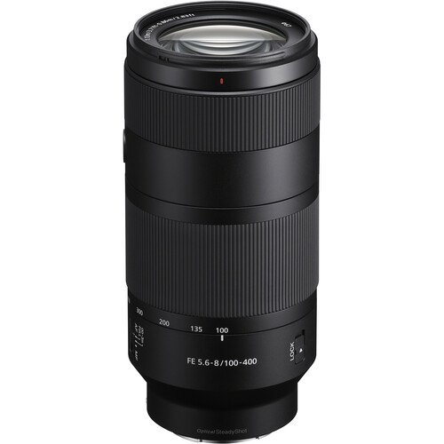

After switching all my photography gear twice, I’m doing it again—for the third time. Or perhaps the fourth. I’ve honestly lost count.
Had I stopped, taken a breath, and thought everything through more carefully, I might have saved quite a bit of money. Sadly, one poor decision after another led me to sell gear at a loss—many times.
To help you avoid making the same mistakes, let me walk you through some of my bad decisions so you don’t repeat them.
Mistake #1: Lack of Patience
Because I was traveling to the United States and had the opportunity to quickly buy and sell equipment through services such as MPB.com, I decided to sell my original kit of excellent lenses. My main goal was to upgrade my camera body.
I couldn’t afford the Sony A7R V outright, so I sold my A7R IV, my Sony 70–200mm f/4, and the 1.4x teleconverter. It was a great lens, and the teleconverter could have remained useful later. Hold that thought.
I initially purchased the Tamron 50–300mm, which I took to Yosemite. It was compact, lightweight, and quite sharp.
Then I caught the YouTube bug.
I watch many professional landscape photographers praising the Tamron 28–200mm, and I started thinking about how convenient it would be to avoid changing lenses. So I sold my Sony 20–70mm f/4—another excellent lens.
Long story short, I have now sold almost everything again. I only kept the Sony 28–60mm f/4–5.6, a lens I love mainly because of its tiny size and low weight. It reminds me so much of Micro Four Thirds lenses.
It isn’t particularly fast, but the A7R V’s sensor handles higher ISO values and noise remarkably well.
Mistake #2: Not Learning From Past Experience
About 15 years ago, I was using a Canon APS-C system and purchased a lens that I barely used: the Tokina 400mm f/5.6. It was quite sharp, but its size and weight meant that I left it at home more often than not. Tokina lenses from that period were not known for strong weather sealing, and Panama’s scorching heat and knife-cutting humidity quickly took their toll.
The lens developed spiderweb-like fungus, which continued to spread until the lens became unusable and impossible to sell. I essentially lost the entire investment.
I was around 48 years old at the time. I recently turned 60, so I should have known better.
Before purchasing lenses such as the 70–200mm and, later, the Tamron 50–400mm, I should have carefully considered their size and weight. I should have realized that carrying them would eventually become an issue.
And lo and behold, it did.
Regrets
Sony 20–70mm f/4: One of the sharpest lenses I have ever owned, and I should have kept it.
Even if I had ultimately decided to sell it, I should have tried selling it locally. It would have taken longer than selling it to MPB, but the final selling price would likely have been considerably higher.
For example, I recently sold my Tamron 28–200mm. Both MPB and B&H offered no more than approximately $370 for it. I sold it locally for $480.
The extra patience made a considerable difference.
Sony 70–200mm f/4: I understand that selling it was the only practical way for me to upgrade the camera body, but I could have sold it for so much more if I just had patience.
Upgrading from the A7R IV to the A7R V is not something I regret. In fact, I think it was one of the best photography decisions I have made. The A7R V feels like a completely different class of camera.
Tamron 50–300mm: A beautiful lens: sharp, compact, and lightweight. Unfortunately, it does not support a teleconverter, so I was limited to 300mm. In practice, 300mm is not particularly long for distant subjects.
Once I owned the Tamron 28–200mm, keeping it solely for the additional 200–300mm range became difficult to justify. Still, the 50–300mm was an excellent companion to the Sony 20–70mm.
Next Steps
I recently sent the Tamron 50–400mm and the Tamron 17–28mm to B&H. I’m losing quite a bit of money on the 50–400mm, although no loss on the 17–28mm. I’m also selling my TTArtisan prime lenses: the 40mm f/2 and the 75mm f/2. They are capable lenses, but I never really connected with them.
What's coming?
Tamron 25–200mm f/2.8–5.6
I’m buying this lens new from B&H, and I will make sure to hit myself very hard on the head with a hammer if I ever consider selling it.
I’m expecting great things from it. It features Tamron’s latest autofocus technology. I’m also getting the Tamron Link connector to expand its customization options.
This will become my bread-and-butter lens for almost every situation, including events.


Viltrox EVO 55mm f/1.8
I shoot panoramas all the time, and I recently discovered that using a 55mm lens vertically provides an excellent perspective for stitching images while minimizing distortion. That should help maximize the quality and consistency of my panoramas.
I also love to shoot 6x17 wide format, popular amongst large format photographers. And instead of cropping a single 61MP file, I do a 2-3 frame panorama. I'm currently using a nodal rail with amazing results.
Viltrox 14mm f/4 Air
I’m not really an ultra-wide-angle photographer. My Tamron 17–28mm f/2.8 spent most of its time collecting dust while waiting for the occasional—and very rare—opportunity to photograph the Milky Way.
Still, there are situations in which I need an ultra-wide lens, and even 17mm can sometimes feel insufficient.
I have read and heard nothing but praise for the Viltrox 14mm f/4 Air. It should give me the wide-angle capability I need without adding excessive size, weight, or cost to my kit.


Sony FE 100–400mm f/5.6–8
I’m also not a frequent long-telephoto user, and I’m definitely not a fan of large and heavy telephoto lenses.
The Tamron 25–200mm should comfortably cover most of my needs, however, there will still be situations in which a subject is farther away—or when I want to photograph the moon—and a longer lens will be useful. This compact Sony full-frame telephoto should serve that purpose without becoming another lens that I constantly leave at home.
At the time of this writing the lens hasn't been released, although there are some reviews online and in YouTube which report it's quality considering its limitations. Extra points for accepting Teleconverters, although I don't see myself using more than the 1.4X TC. Now it became obvious the reason why should I have held to it from the beginning.
Will This Ever End?
Probably not. If there is one constant among artists, it is change. We experiment, we rethink our choices, and we convince ourselves that the next lens or camera will finally complete the perfect kit.
Perhaps the real lesson is not that we should never change our equipment. It is that we should slow down, learn from our previous decisions, and make each change for the right reasons—not simply because the internet told us that something else might be better.